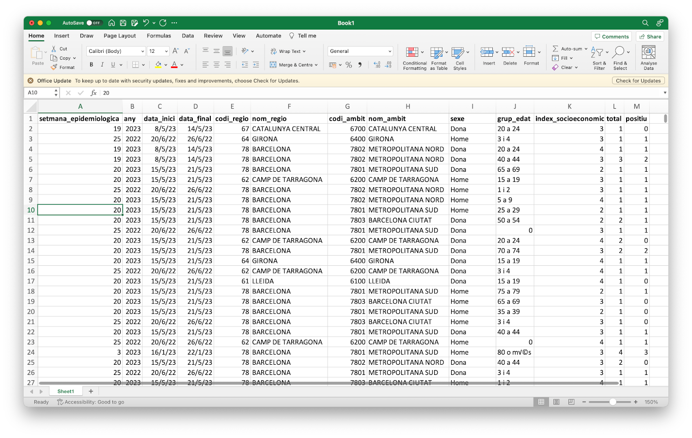

The learning objectives for this practical are:
In this practical we will use some basic commands to explore and manipulate text files in a Unix filesystem. You need to have access to a Unix command-line interface (CLI). If you are doing this practical in your own computer, please check the setup webpage to make sure that you have access to some flavor of a Unix operating system and its CLI.
We will use the data files called mostres_analitzades.csv i virus_detectats.csv that were generated in the first practical. If you don’t have these files, please review that practical and generate them again. Once you have obtained those two files, copy them into a fresh new directory called practical2.
If you have not done so yet, please download an install a text editor application in your computer, following the setup instructions. Once the text editor application is installed, run it as follows:
If you have installed a classical text editor, open the editor in a new terminal window. Classical editors are tipically called from the Unix shell and it’s handy to give them the name of the file you want to edit right way as you called them as a first argument. If you do that, give them the filename practical2.sh.
If you have installed a modern text editor, open it by starting the application from the graphical user interface of your computer.
Once the text editor application is running, write the following two lines on a new fresh empty text file:
## Script for practical 2
Save these contents into a file called practical2.sh located at the directory practical2 that you created before. During the rest of this practical, write all the Unix commands that you type in the terminal also in the text file. Please don’t type them twice, first type them in the terminal window and once they work, then select the command-line using the mouse and finally copy and paste it into the text editor. Each time you copy a new line, save the file again. To keep a better record of what you are doing, add above each shell line a shell comment line, which always starts with one or more hash characters (#), for example:
## list the files
lsOnce you have some Unix commands in your script file, and you have save it to disk, you may execute that script from the Unix shell as follows (assuming you saved the script as practical2.sh):
$ sh practical2.shTip: when writing shell scripts you will likely introduce syntax errors, which sometimes may be difficult to identify. To help you in identifying those errors you may use the website https://www.shellcheck.net. To use it you should paste into the main text box the following line, known as shebang:
#!/bin/shand afterwords paste the line, or lines, for which you want to check the syntax of your shell script. The website will parse your script and tell you that either issues were not detected or what syntax errors have been encountered.
In the previous practical we have seen how to redirect the terminal output to a file. In this section we are going to see a similar concept, where instead of redirecting the terminal output created by a Unix command to a file, we will redirect that terminal output as input into another Unix command by using what is known as a Unix pipeline, or Unix pipe for short. The concept of Unix pipes was created by Douglas McIlroy, which is based on his widely adopted view of the Unix philosophy:
Write programs that do one thing and do it well. Write programs to work together. Write programs to handle text streams, because that is a universal interface.
To use the Unix pipe we should place the vertical bar character (|) between the call to two commands. Tip: In keyboards with a Spanish layout, the bar character | can be written by pressing the keys AltGr+1 in windows and Ubuntu, or Alt+1 in MacOS.
Try the following:
$ cat mostres_analitzades.csv | headNotice that while the cat command should have sent the output of the whole text file to the terminal window, we only see the first few lines of that output. This has occurred because the pipe has sent that whole output from the cat command to the input of the head command, which only shows the first few lines of that input. This can be graphically represented as follows:
Text files such as CSV files have a matrix layout with rows corresponding to lines and columns to values separated by some delimiter character, which is a semicolon (;) in the case of the previous file catalunya_setmanal.csv. Because of its matrix layout, a CSV file can be always opened by any spreadsheet software, such as Microsoft Excel; see image below.

However, there are at least two circumstances in which working with CSV files from the Unix command-line is preferable to do it from a spreadsheet software such as Microsoft Excel:
Additionally, the misuse of Microsoft Excel has caused multiple problems with important consequences in loss of monetary and human-time resources, such as the loss in 2020 of COVID19-test results in England or the misspelling of gene names stored in Excel files as supplementary information to scientific articles.
Here we will learn to do two common operations on data organized in a matrix layout: extract rows (lines) and extract columns (delimiter-separated values). To extract rows from a text file in Unix we will use the command grep, which requires two pieces of information:
$ grep pattern filenamewhere pattern is the text that we expect to match to the lines we want to extract, while filename is the name of the file from which we want to extract the lines matching the pattern. Note that pattern can be something sophisticated such as a regular expression (not covered in this practical) and filename can be ommitted when we want grep to read input from a pipe.
For instance, the column nom_regio in the file mostres_analitzades.csv stores the name of the Catalan area to which the data in the row corresponds to. Let’s say we want to extract the rows for the data derived from the area of Barcelona into a separate file called mostres_analitzades_bcn.csv.
$ grep BARCELONA mostres_analitzades.csv > mostres_analitzades_bcn.csvNow, repeat the command but this time extracting the rows corresponding to the data derived from the area of Lleida into another file called mostres_analitzades_lleida.csv.
Note: note that grep has worked well for this particular task because any other column in the data that was using the terms BARCELONA or LLEIDA, had those terms also in the column nom_regio. The grep command doesn’t know about columns, it only finds matches of a pattern in lines, reporting the lines that match the pattern. You can also ask grep to report the lines that do not match the pattern by using the option -v.
Try to extract rows from the file mostres_analitzades.csv with data corresponding to women between 20 and 24 years of age into a new file called mostres_analitzades_dones20a24.csv. If you are unsure how to dump the output into a new file, please check this section from the previous practical. Tip: when the pattern consists of more than one word, or includes punctuation characters, you should enclose the pattern between two quote characters, e.g., 'something like this'.
Warning: when using the terminal output redirection mechanism (>) you should never use as output filename, the filename that is being used as input in the same command line, because that would lead to overwriting the input file and ending with a corrupted output or without output at all.
Extracting columns can be done using the Unix command cut, which in the case of CSV files also requires specifying the options -d and -f:
$ cut -d 'delimiter' -f field filenameThe option -d allows us to specify a delimiter character, which by default is the TAB character and should be always specified between single quotes (e.g., ','). The option -f allows us to specify the columns, also known as fields in this context. For instance, let’s say we want to extract the column of the CSV file mostres_analitzades.csv corresponding to the number of positive cases at each week. First, we should identify which position has this column in the first line:
$ head -n1 mostres_analitzades.csv
setmana_epidemiologica,any,data_inici,data_final,codi_regio,nom_regio,codi_ambit,nom_ambit,sexe,grup_edat,index_socioeconomic,total,positiuwhere we have used the option -n1 to force head to show only the first line of the file. Then, starting from 1, we should figure out that the column called positiu is number 13 and taking into account that this file uses the comma (,) as field separator, we should write the following command-line to extract that column:
$ cut -d ',' -f 13 mostres_analitzades.csv | headNow let’s say we want to extract this column from the Barcelona subset of the data. We could either run the previous command on the file we created before:
$ cut -d ',' -f 13 mostres_analitzades_bcn.csv | heador had we not generated that file, we could have done it from the original data file using two pipes, as follows:
$ grep BARCELONA mostres_analitzades.csv | cut -d ',' -f 13 | headNote that in both cases the output is identical.
Unix provides a command called sort to order rows of a file in a number of ways. By default, it sorts rows in increasing alphabetical order. Note for instance that in the mostres_analitzades.csv file, the first column setmana_epidemiologica contains the week of the year in which the values for the corresponding row were obtained. However, if we directly sort the file with the default regime of sort, we will not see at the beginning of the data the first week of the year, nor the last week at the end. Try the following:
sort mostres_analitzades.csv | head
sort mostres_analitzades.csv | tailTry now using the option -n, which forces sort to output the lines in numerical order instead of the alphabetical one and compare the result with the previous one:
sort -n mostres_analitzades.csv | head
sort -n mostres_analitzades.csv | tailNote: an important feature of the sort command, and of most of the Unix commands, is that it leaves the input file intact. The sort command merely shows us the ordered version of the input file on the screen. It does not alter the input file.
Exercise: generate an alphabetically increasing ordered version of the file mostres_analitzades.csv and store it under the file name mostres_analitzades_ordenat.csv.
The Unix command uniq removes consecutive duplicated lines. This command is mostly useful in combination with the previous two commands that can be used to extract a column and sort it alphabetically, because that operation will allow us to output identical values together. Let’s see this working with the following example on the file mostres_analitzades.csv, try to understand what is each command line doing:
$ cut -d ',' -f 6 mostres_analitzades.csv | head
nom_regio
CATALUNYA CENTRAL
GIRONA
BARCELONA
BARCELONA
BARCELONA
CAMP DE TARRAGONA
BARCELONA
BARCELONA
BARCELONA
$ cut -d ',' -f 6 mostres_analitzades.csv | sort | head
ALT PIRINEU I ARAN
ALT PIRINEU I ARAN
ALT PIRINEU I ARAN
ALT PIRINEU I ARAN
ALT PIRINEU I ARAN
ALT PIRINEU I ARAN
ALT PIRINEU I ARAN
ALT PIRINEU I ARAN
ALT PIRINEU I ARAN
ALT PIRINEU I ARAN
$ cut -d ',' -f 6 mostres_analitzades.csv | sort | uniq
ALT PIRINEU I ARAN
BARCELONA
CAMP DE TARRAGONA
CATALUNYA CENTRAL
GIRONA
LLEIDA
No disponible
nom_regio
TERRES DE L'EBREIn the previous practical, we have seen the command wc, which can be employed to count the lines of a text file. Here we will see that the command uniq with its option -c, can be used to count consecutively repeated lines. This is useful to count occurrences of interest in a file. For instance, let’s say we want to count the number of different occurrences of positive cases in the file mostres_analitzades.csv, i.e., how many lines (weeks) reported 0 positive cases, how many reported 1, how many reported 2, etc. We need to extract the positive column (13), sort it and apply the uniq -c command (results below from data downloaded on October 3rd, 2023):
$ cut -f 13 -d ',' mostres_analitzades.csv | sort | uniq -c
3908 0
8311 1
1806 2
443 3
102 4
30 5
9 6
2 8
1 9
1 positiuLet’s say we want to see the most frequent occurrences first. We would need then to sort the previous output numerically (option -n) and from largest to smallest (option -r), as follows:
$ cut -f 13 -d ',' mostres_analitzades.csv | sort | uniq -c | sort -n -r
8311 1
3908 0
1806 2
443 3
102 4
30 5
9 6
2 8
1 positiu
1 9So the most frequent reported positive figure was 1 in 8211 weeks (lines in the CSV file), the second most frequent one was 0 positives in 3827 lines, and so on. We can also tell sort to order that output by the second column using the option -k, which would give us the whole ordered frequency distribution of positives:
$ cut -f 13 -d ',' mostres_analitzades.csv | sort | uniq -c | sort -n -k 2
1 positiu
3908 0
8311 1
1806 2
443 3
102 4
30 5
9 6
2 8
1 9The Unix command paste allows us to paste in parallel lines of given files using a TAB as delimiter character by default, which can be changed with the option -d. For instance, see what happens when extract two columns from the CSV file and paste them again:
$ cut -d ',' -f 1 mostres_analitzades.csv > mostres_analitzades_setmana.csv
$ cut -d ',' -f 13 mostres_analitzades.csv > mostres_analitzades_positiu.csv
$ paste mostres_analitzades_setmana.csv mostres_analitzades_positiu.csv | head
setmana_epidemiologica positiu
19 0
25 1
19 1
19 2
20 1
20 1
25 1
20 1
20 1Using the Unix commands we have learned in this practical, try to answer the questions below about the downloaded SIVIC data. Try to edit a shell script for each question under the filename, for instance, question1.sh, question2.sh, etc., and execute it from the shell as, for instance:
$ sh question1.shOne of the previous commands revealed a value called No disponible, which suggests that some of the weeks in the two SIVIC data files, may contain the so-called missing values. Calculate how many weeks do we have in each of the two SIVIC data files, mostres_analitzades.csv and virus_detectats.csv, excluding those with missing values. (answer: 14565 for mostres_analitzades.csv and 13731 for virus_detectats.csv, for the data downloaded on October 3rd, 2023)
Which was the highest number of positives in the file mostres_analitzades.csv in the data from the last week of 2022? (answer: 4 for the data downloaded on October 3rd, 2023)
Using the file virus_detectats.csv, figure out how many different viruses are being tested by the SIVIC system. (answer: 10 for the data downloaded on October 3rd, 2023)
Using the file mostres_analitzades.csv, build a ranking of the data by the number of positives cases, from highest to lowest, found in the area of Lleida in 2022, among men between 40 and 44 years of age, showing only the week number, initial and end date, and number of positives. For the data downloaded on October 3rd, 2023, the top of the ranking should look like this:
46,14/11/2022,20/11/2022,5
47,21/11/2022,27/11/2022,2
40,03/10/2022,09/10/2022,2
51,19/12/2022,25/12/2022,1
50,12/12/2022,18/12/2022,1
48,28/11/2022,04/12/2022,1
46,14/11/2022,20/11/2022,1
45,07/11/2022,13/11/2022,1
45,07/11/2022,13/11/2022,1
41,10/10/2022,16/10/2022,1Generate the ranking from the previous question replacing the area of Lleida by the area of Girona and compare the top of those two rankings, side by side. For the data downloaded on October 3rd, 2023, that comparison should look as follows, with the data from Lleida on the left and from Girona on the right:
46,14/11/2022,20/11/2022,5 22,30/05/2022,05/06/2022,3
47,21/11/2022,27/11/2022,2 50,12/12/2022,18/12/2022,2
40,03/10/2022,09/10/2022,2 42,17/10/2022,23/10/2022,2
51,19/12/2022,25/12/2022,1 39,26/09/2022,02/10/2022,2
50,12/12/2022,18/12/2022,1 52,26/12/2022,01/01/2023,1
48,28/11/2022,04/12/2022,1 51,19/12/2022,25/12/2022,1
46,14/11/2022,20/11/2022,1 49,05/12/2022,11/12/2022,1
45,07/11/2022,13/11/2022,1 46,14/11/2022,20/11/2022,1
45,07/11/2022,13/11/2022,1 45,07/11/2022,13/11/2022,1
41,10/10/2022,16/10/2022,1 40,03/10/2022,09/10/2022,1We can observe that both areas had the larger occurrence of positives cases around the same weeks of the year, except for the 22nd week in Girona.
Can you understand the following Unix command-line jokes?